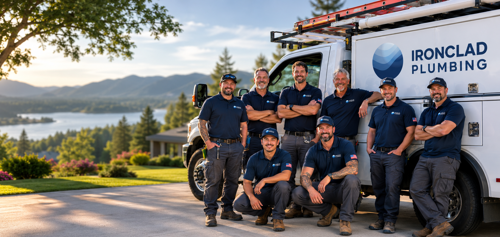

Fast, Expert Drain Cleaning in Austin
24/7 help from our licensed plumbers, with clear pricing
and an ironclad warranty
Our Ironclad Guarantee
Signs You Need Drain Cleaning
Drains almost never fail without warning; they slow down, gurgle, and smell before they ever back up. Catching those warnings early is the difference between a quick clear and water on the floor. Here are the four that matter most.
Water drains slowly
A sink, tub, or shower that takes forever to empty is the earliest warning. Buildup is narrowing the pipe, and it only gets tighter from here.
The same clog keeps coming back
You clear it, it works for a few days, then slows down again. A returning clog almost always means buildup deeper in the line than a plunger can reach.
Gurgling sounds or sewer smells
Gurgling after the water runs, or an odor rising from the drain, points to trapped air or a partial blockage. The drain is telling you something is stuck.
More than one drain backs up at once
When several fixtures act up together, the problem isn't the fixture; it's the main line. This one deserves a call today.
Our Drain Cleaning Services
Whether it's one slow sink or the whole house backing up, we clear the blockage, then find out why it happened so it stays clear. Every job starts with a diagnosis and an exact price you approve before work begins.
Austin Homeowners Trust Ironclad
Had three other plumbers tell me I needed to dig up my yard for a sewer line issue. Ironclad did a camera inspection and fixed it with trenchless repair. Saved me thousands.
Called them for a leak under our kitchen sink. They showed up same day, found the problem fast, and fixed it in under an hour. Price was exactly what they quoted.
Our water heater died on a Sunday night. They answered the phone and had someone out Monday first thing. These guys are the real deal.
Drain Cleaning in Austin and Nearby Areas
Same-day drain cleaning across Austin and the surrounding metro.
Drain Cleaning FAQ
Ready to Clear Your Drain?
Book online in 60 seconds or call for fast drain cleaning in Austin.